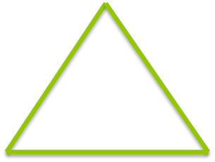

@coldfuser
drewwells
I work for WhaleShark Media
Employee of the month
Promises
Promises provide a well-defined interface for interacting with an object that represents the result of an action that is performed asynchronously, and may or may not be finished at any given point in time. By utilizing a standard interface, different components can return promises for asynchronous actions and consumers can utilize the promises in a predictable manner. Promises can also provide the fundamental entity to be leveraged for more syntactically convenient language-level extensions that assist with asynchronicity.
Promises/A CommonJS Spec
If you're bored, read more.
I promise to call you

Credits: http://jaubourg.net/, Logo designed by Colin Snover
jQuery.Deferred()
chainable utility object that can register multiple callbacks into callback queues and relay the success or failure state
Why?
$.ajax( '/endpoint', function(){
//Executed on successful ajax request
})
[ fn1() ]
[ fn1() ]
[ fn1(), fn2() ]
[ fn1() ]
[ fn1(), fn2() ]
[ fn3() ]
$.ajax( '/endpoint', function(){
//Executed on successful ajax request
})
$.ajax( '/endpoint' )
.done(function(){
//Executed on successful ajax request
});
$.ajax( '/endpoint', function(){
//Executed on successful ajax request
})
$.ajax( '/endpoint' )
.done(function(){
//Executed on successful ajax request
});
What if I want conditional callbacks?
if( condition ){
$.ajax( '/endpoint', function(){ } );
} else {
$.ajax( '/endpoint', function(){ } );
}
$.ajax( '/endpoint',
condition ? function(){ } : function(){ } );
var deferred = $.ajax( '/endpoint', function(){
});
if( condition ){
deferred.done(function(){
});
}
- done()
- fail()
- resolve()
- reject()
- pipe()
- promise()
Also... always, isResolved, isRejected, notify, notifyWith, progress, rejectWith, state, then, when

Let me know when all three data calls complete
Three pieces of data retrieved
var dfd = $.Deferred();
dfd.done(function(){
//Success!
});
$.getJSON( '/endpoint', function( data ){
if( data.success === true ){
dfd.resolve( data );
}
});
promise your deferred object
then, done, fail, always, pipe, progress, state OK
resolve, reject, notify, resolveWith, rejectWith, notifyWith Not OK
var dfd = $.Deferred();
var safe = dfd.promise();
Now for cool stuff
deferred.pipe( [doneFilter] [,failFilter] )Chain Asynchronous actions
$.ajax( 'url1', function(){
$.ajax( 'url2', function(){
});
});
NO
var dfd = $.ajax( 'url1', function(){
}).pipe(function(){
return $.ajax( 'url2', function(){ });
})
dfd.done(function(){
});
var dfd = $.ajax( 'url1' ).pipe(function( value ){
return value * 2;
});
dfd.done(function(){
});